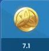
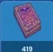
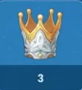
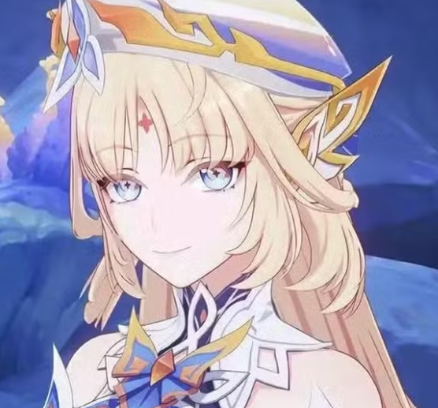
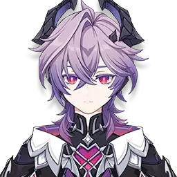
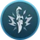

Histoire du personnage
Lohen est un garçon de quatorze ans qui a rejoint très jeune l’Ordre de Favonius. Il n’avait qu’une dizaine d’années lorsque Varka et plusieurs chevaliers le retrouvèrent dans les ruines d’un laboratoire clandestin situé aux environs de Mondstadt.Dès son arrivée, les chevaliers remarquèrent sa maîtrise exceptionnelle des armes.Pourtant, ce qui les frappa le plus fut son regard vide, presque dépourvu d’émotions. Lohen semblait incapable d’exprimer la peur, la tristesse ou même la douleur. Il pouvait se montrer particulièrement violent au combat et cherchait souvent à éliminer tous ses ennemis, sans jamais leur laisser la moindre chance qu'il soit ennemis ou allier lohen n'hesite pas a tuer. Son sourire, froid et inquiétant et ne refletant que une etrange atmosphére, suffisait à faire trembler certains des chevaliers les plus expérimentés de l’Ordre. Dans ses yeux brillait parfois une étrange lueur rose et rouge, qui rappelait vaguement les phénomènes associés à la Chasse sauvage present a Nod-Krai. Personne ne savait exactement ce qu’elle signifiait ou ce qu'elle represnete réellement , mais cette particularité alimentait les craintes et les rumeurs à son sujet. Qu'il n'est peut être pas totalement humain, apres tout un enfant avec de telle particularité c'etait etrange et inquiétant. Cette inquietude alimentat une rumeur parmis les chevaliers, ce garçon on n'e connait rien de lui apres tout et son visage et se sourrire ressemble bien trop au fatui Il Dottore. Aprés tout a l'epoque a Mondstadt il y avait un laboartoire fatuit qui faisait des experiences. Lorsque Varka et plusieurs chevaliers découvrirent le laboratoire abandonner, Lohen se trouvait au milieu des décombres, couvert du sang de membres des Fatuis son regard ne refleter rien d'autre que du vide et une colére sans non.Dans une main, il tenait une lame et dans l'autre une Vision Cryo. Plutôt que de l’abandonner ou de le considérer comme un ennemi, Varka décida de recueillir Lohen et de lui offrir une place au sein de l’Ordre de Favonius. Le Grand Maître espérait ainsi lui permettre de découvrir ce qu’était une vie normale et de comprendre que sa valeur ne se résumait pas à ses capacités de combat. Au fil des années, Lohen apprit à vivre parmi les chevaliers, même s’il resta distant et difficile à comprendre. Ses aptitudes exceptionnelles, son sang-froid et sa connaissance des méthodes des Fatui firent rapidement de lui un élément précieux pour les missions secrètes. Il fut finalement nommé capitaine de la quatrième compagnie, une unité spécialisée dans le renseignement, l’infiltration et la collecte d’informations. Pour certains chevaliers, Lohen reste un jeune garçon ayant besoin d’être protégé. Pour d’autres, il demeure une arme dangereuse dont le véritable passé pourrait un jour refaire surface et de devenir une toute nouvelle menace pour Mondstadt Mais une chose reste sûre, il reste Lohen capiatine de la sixiéme division de l'ordre de Favonius et second de Varka.

Style combat
compétences
Lohen est un personnage de Genshin Impact qui joue principalement en tant que DPS Cryo. Voici quelques points clés sur ses compétences :
- Attaque normale : Lance de Favonius, qui enchaîne jusqu'à 5 attaques.
- Attaque chargée : Consomme de l'endurance pour déclencher un coup vers l'avant.
- Attaque plongeante : Plonge depuis les airs pour infliger des dégâts aux ennemis en chemin et des dégâts de zone à l'impact
- État Coup de maître : Lohen peut accumuler de la joie pour déclencher sa compétence spéciale Gravé dans les os et l'âme, qui inflige des dégâts Cryo augmentés
Aptitudes

Frappe imprévue
- Tandis qu'il traque les points faibles, Lohen entre dans l'état coup de maître :
- Lohen peut accumuler activement de la joie pour déclencher sa compétence élémentaire spéciale.
- Les autres personnages de l'équipe à proximité peuvent accumuler de la détermination pour Lohen afin d'augmenter les DGT.

Jugement manifeste
- Exécute une série rapide de frappes vers l'avant, consommant toute la détermination pour infliger des DGT Cryo.
- Les DGT sont augmentés selon la quantité de détermination consommée.
- Si Lohen est dans l'état coup de maître, la durée augmente de 1,65 s.

Moratoire sur les interrogatoires
- Pendant l'état coup de maitre, Lohen obtient 60 pts de détermination supplémentaires lorsqu'un autre personnage de l'équipe à proximité l'aide à cumuler de la de si les DGT infligés sont supérieurs ou égaux à 3 000 % de l'ATQ de base de Lohen.

Chef-d'œuvre désinvolte
- Pendant l'état coup de maitre, lorsqu'un autre personnage de l'équipe à proximité a déclenché une réaction liée à l'élément Cryo, son ATQ et celle de Lohen augmentent de 15 % pendant 8 s.

Épine inguérissable
- Après avoir terminé le devoir de la sorcière « Question d'opposition », Lohen devient un personnage héxère. Si l'équipe contient au moins 2 personnages héxères, elle bénéficie de l'effet Hexerei : Rituel secret qui améliore les personnages héxères.
- Hexerei : Rituel secret En touchant un ennemi avec sa compétence élémentaire spéciale Grave dans les os et dans l'âme ou en utilisant son déchaînement élémentaire Jugement manifeste, les DGT des attaques normales et chargées de Lohen augmentent de 40 % pendant 6 s si sa determination a atteint au moins 50 % de son maximum

Quand l'envie prend
- Après avoir utilisé sa compétence élémentaire Frappe imprévue, Lohen obtient l'effet Esprit exalté pendant 9 s : augmente le niveau de Frappe imprévue de 1. Si une des attaques normales, une des compétences élémentaires ou un des déchaînements élémentaires d'un autre personnage de l'équipe n'a pas un niveau inférieur à celui de la compétence élémentaire de Lohen lors de son déclenchement, la durée de cet effet Esprit exalté est prolongée de 6 s supplémentaires. L'effet Esprit exalté peut être obtenu une fois toutes les 18 s.

Différentes armes
- Lance:Désastre et remords
- Poignard:imprégné de poison
- Mini-Arbalète:au poignets gauche
- Revolver:aime faire des pièges
Élévation du personnage

Moras
Monnaie du jeu
- Sert à payer pour l'élévation du personnage.
- Se trouve partout : quêtes, coffres, événements et donjons.
- Il vous en faudra au total environ 7,1 millions.

Livre d'expérience
Leçons du héros / Conseils de l'aventurier
- Sert à augmenter le niveau du personnage.
- Se récupère partout : coffres, quêtes, expéditions et fleurs de la fortune.
- Il vous en faudra au total plus de 419 livres violets.

Queue coupée prismatique
Matériau de boss de zone
- Sert à débloquer les paliers d'élévation de Lohen.
- Se récupère en éliminant le boss Lunigecko radieux à Nod-Krai.
- Il vous en faudra au total 46.

Papillon à ailes d'éther
Spécialité locale
- Sert à l'élévation du personnage à chaque palier.
- Se capture dans la nature : Pic Vent-repos, Temple de l'espace et Hall aux piliers.
- Il vous en faudra au total 168.
Élévation des aptitudes

Guide de la résistance
Guide de la résistance
- Sert à améliorer les aptitudes, au fil de l'augmentation il évolue aussi.
- Se trouve dans des donjons disponibles seulement certains jours.
- Il vous en faudra au total 186.

Couronne
Couronne de la sagesse
- Les couronnes servent à améliorer une aptitude qui est déjà au maximum.
- On les récupère durant des événements temporaires et de grosses quêtes.
- Il vous en faudra au total 3.

Pointe de flèche usée
Flèche usée
- Les pointes de flèche usée servent à améliorer les aptitudes de base.
- On les récupère quand on bat des Brutocollinus, ennemis basiques du jeu.
- Il vous en faudra au total 261.

Jeu d'échec
Pièce de jeu d'échec
- Les pièces de récupération du jeu d'échec servent à améliorer les aptitudes de base.
- On les récupère en battant le boss, disponible seulement après une quête importante à Mondstadt.
- Il vous en faudra au total 18.
Team Lohen
Varka

Nicole

Durin
Constellations

C1 — Ô brise, qui portent si souvent des lamentations tristes
La limite de Volonté de gagner de Lohen est portée à 300 % de sa valeur initiale. De plus, lorsque d'autres membres de l'équipe infligent des DGT pendant Grève imprévue, ils accumulent 500 % de Volonté de gagner en plus pour lui.

C2 — En vol, je frappe tout ce qui vole
En mode Coup de maître, après la compétence spéciale ou Jugement manifeste, Lohen obtient « Lame Épouse du Mal » pendant 4 s : sa prochaine attaque normale ou chargée inflige des DGT Cryo de zone (500 % de l'ATQ) et augmente la Maîtrise Élémentaire de l'équipe de 200 pts pendant 8 s.
C3 — Seule la lance que les blessures peuvent guérir
Augmente le niveau de la compétence Frappe imprévue de 3.
Niveau d'amélioration maximal : 15.
C4 — Amour radieux, mort riante
En mode Coup de maître, Jugement manifeste bénéficie de la Volonté de gagner maximale. De plus, Lohen récupère 15 pts d'Énergie élémentaire si elle n'est pas pleine, ou lors du prochain déchaînement si elle l'était déjà.
C5 — Ne demandez jamais, ni ne vous embêtez pour le savoir
Augmente le niveau de la compétence Jugement manifeste de 3.
Niveau d'amélioration maximal : 15.
C6 — Se noyer, couler, inconscient — Joie Suprême
En mode Coup de maître, Jugement manifeste ne consomme aucune Volonté de gagner et maximise la Joie. Frapper avec Gravé dans l'os et l'âme prolonge ensuite la durée du Coup de maître de 1,25 s (déclenchable toutes les 7 s).
Design de Lohen